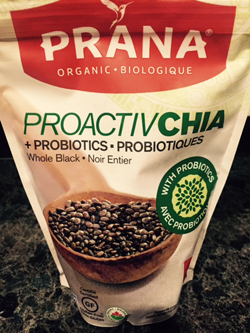

<?xml version="1.0" encoding="utf-8"?>
<!-- generator="Joomla! - Open Source Content Management" -->
<rss version="2.0" xmlns:atom="http://www.w3.org/2005/Atom">
	<channel>
		<title>Food Facts</title>
		<description><![CDATA[]]></description>
		<link>http://jump6.com/index.php/health-fitness-and-lifestyle/jump6-food-facts</link>
		<lastBuildDate>Tue, 08 Jan 2019 18:43:13 +0000</lastBuildDate>
		<generator>Joomla! - Open Source Content Management</generator>
		<atom:link rel="self" type="application/rss+xml" href="http://jump6.com/index.php/health-fitness-and-lifestyle/jump6-food-facts?format=feed&amp;type=rss"/>
		<language>en-gb</language>
		<item>
			<title>Sugar Content in Fruit</title>
			<link>http://jump6.com/index.php/health-fitness-and-lifestyle/jump6-food-facts/124-sugar-content-in-fruit</link>
			<guid isPermaLink="true">http://jump6.com/index.php/health-fitness-and-lifestyle/jump6-food-facts/124-sugar-content-in-fruit</guid>
			<description><![CDATA[]]></description>
			<category>Food Facts</category>
			<pubDate>Fri, 16 Jun 2017 01:57:37 +0000</pubDate>
		</item>
		<item>
			<title>Things To Eat After 8PM</title>
			<link>http://jump6.com/index.php/health-fitness-and-lifestyle/jump6-food-facts/108-things-to-eat-after-8pm</link>
			<guid isPermaLink="true">http://jump6.com/index.php/health-fitness-and-lifestyle/jump6-food-facts/108-things-to-eat-after-8pm</guid>
			<description><![CDATA[<p>&nbsp;Greek Yougurt</p>
<p>&nbsp;</p>
]]></description>
			<category>Food Facts</category>
			<pubDate>Mon, 03 Apr 2017 17:20:13 +0000</pubDate>
		</item>
		<item>
			<title>Weight loss and staying motivated</title>
			<link>http://jump6.com/index.php/health-fitness-and-lifestyle/jump6-food-facts/88-weight-loss-and-staying-motivated</link>
			<guid isPermaLink="true">http://jump6.com/index.php/health-fitness-and-lifestyle/jump6-food-facts/88-weight-loss-and-staying-motivated</guid>
			<description><![CDATA[<p style="text-align: justify;">&nbsp;When it comes to weight loss do you sometimes feel like you have 2 personalities?</p>
<p style="text-align: justify;">&nbsp;</p>
]]></description>
			<category>Food Facts</category>
			<pubDate>Thu, 16 Feb 2017 19:04:40 +0000</pubDate>
		</item>
		<item>
			<title>8 Best Fat Burning Foods</title>
			<link>http://jump6.com/index.php/health-fitness-and-lifestyle/jump6-food-facts/80-8-best-fat-burning-foods</link>
			<guid isPermaLink="true">http://jump6.com/index.php/health-fitness-and-lifestyle/jump6-food-facts/80-8-best-fat-burning-foods</guid>
			<description><![CDATA[<p><span style="color: #444444; font-family: arial, helvetica, sans-serif; font-size: 13.3333px;">Who said a healthy breakfast had to be boring.</span></p>
<p>&nbsp;</p>
]]></description>
			<category>Food Facts</category>
			<pubDate>Fri, 13 Jan 2017 02:11:13 +0000</pubDate>
		</item>
		<item>
			<title>Emotions That Can Lead To Overeating</title>
			<link>http://jump6.com/index.php/health-fitness-and-lifestyle/jump6-food-facts/79-emotions-that-can-lead-to-overeating</link>
			<guid isPermaLink="true">http://jump6.com/index.php/health-fitness-and-lifestyle/jump6-food-facts/79-emotions-that-can-lead-to-overeating</guid>
			<description><![CDATA[<p>&nbsp;Because it can trigger some sense of reward.</p>
<p>&nbsp;</p>
]]></description>
			<category>Food Facts</category>
			<pubDate>Fri, 13 Jan 2017 02:08:40 +0000</pubDate>
		</item>
		<item>
			<title>Benefits of Chia Seeds</title>
			<link>http://jump6.com/index.php/health-fitness-and-lifestyle/jump6-food-facts/77-benefits-of-chia-seeds</link>
			<guid isPermaLink="true">http://jump6.com/index.php/health-fitness-and-lifestyle/jump6-food-facts/77-benefits-of-chia-seeds</guid>
			<description><![CDATA[<p>&nbsp;Lose Weight Without Starving</p>
<p>&nbsp;</p>
]]></description>
			<category>Food Facts</category>
			<pubDate>Fri, 13 Jan 2017 01:59:44 +0000</pubDate>
		</item>
		<item>
			<title>Eat out and still lose weight</title>
			<link>http://jump6.com/index.php/health-fitness-and-lifestyle/jump6-food-facts/76-food-facts</link>
			<guid isPermaLink="true">http://jump6.com/index.php/health-fitness-and-lifestyle/jump6-food-facts/76-food-facts</guid>
			<description><![CDATA[<p>&nbsp;Healthy Eating Tips.</p>
<p>&nbsp;</p>
]]></description>
			<category>Food Facts</category>
			<pubDate>Fri, 13 Jan 2017 01:56:02 +0000</pubDate>
		</item>
		<item>
			<title>What is GMO?</title>
			<link>http://jump6.com/index.php/health-fitness-and-lifestyle/jump6-food-facts/75-what-is-gmo-jump6</link>
			<guid isPermaLink="true">http://jump6.com/index.php/health-fitness-and-lifestyle/jump6-food-facts/75-what-is-gmo-jump6</guid>
			<description><![CDATA[<p>Genetic modification is the process of forcing genes from one species into another entirely unrelated species.</p>
<p>&nbsp;</p>
]]></description>
			<category>Food Facts</category>
			<pubDate>Thu, 10 Nov 2016 02:30:18 +0000</pubDate>
		</item>
	</channel>
</rss>

<!-- Localized -->